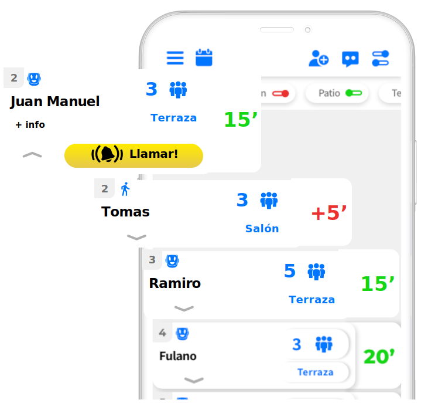

Ofrecé mesas libres en tiempo real
Esta funcionalidad le brinda al partner una novedosa oportunidad para poder llenar en todo momento la totalidad de las mesas disponibles. Es la primera herramienta tecnológica que le muestra a los potenciales clientes la disponibilidad de mesas de tu restaurant sin necesidad de estar físicamente en el local gastronómico.